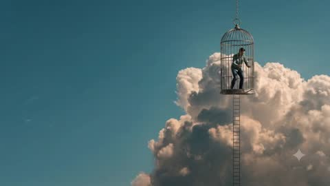
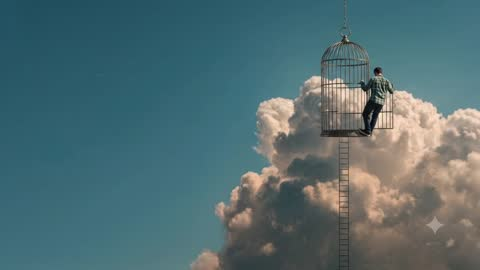
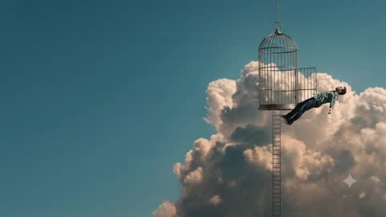
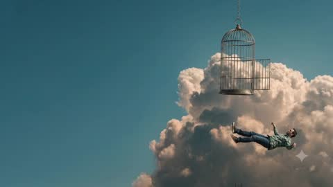

Four rules the clips already follow
Small figure, big sky
The person never fills the frame. Leave at least two thirds of every image to sky and cloud.
Warm light, cool air
Sunlit clouds in peach and sand against a flat teal sky. No pure white, no pure blue.
Everyday objects, wrong place
Birdcage, ladder, chain. Ordinary things hanging where they shouldn't, painted realistically.
Weightless, never dramatic
Falling looks like floating. Slow, calm and quiet; no explosions, lens flares or speed lines.
Sky first, cloud second, brass sparingly
Click a swatch to copy its hex. The bar shows how much of a page each colour should cover.
An old-fashioned serif in a modern sky
The high-contrast serif gives the surreal, painting-like tone; the clean sans keeps the page easy to read.
Headlines and pull quotes. Italic for the big moments, roman for section titles.
Most of us aren't held in by locks. We stay because the cage is familiar and the sky looks far away.
Paragraphs, buttons, navigation.
Fill the gaps between videos
Cage bars
Thin vertical stripes over a cloud glow. Section backgrounds and image masks.
Drifting cloud
Soft gradient puffs that move a few pixels a minute. A light hero when no video fits.
Ladder
Dividers, timelines and scroll progress. It's the rail on the left of this page.
Film grain
A faint noise overlay on flat colour so code-made sections match the texture of the video.
Slow in, slower out
glide · 600–900 msHovers and reveals. Long ease-out, so things settle gently.
float · 6–30 sAmbient clouds and backgrounds. Barely noticeable, never loops sharply.
fall · 1.2–3 sThe one dramatic gesture, for page transitions: a soft drop, like the figure leaving the cage.
One video, many assets
Each frame works as a thumbnail, social image or section background.




Paste this into any image or video generator
Add your subject on the first line; keep the rest the same so every new piece matches.
[SUBJECT, e.g. "a wooden door standing alone on a cloud"] Surreal photorealistic scene in the style of a calm magical-realist painting. A vast, flat teal-blue sky (#3E6E7B) fills most of the frame. Large cumulus clouds lit by warm late-afternoon sun, peach and sand highlights (#EFD4BF) with soft grey-teal shadows. Ordinary objects (a brass birdcage, a thin ladder, a hanging chain) placed impossibly in the sky. If a person appears, they are small in the frame, in casual clothes, moving slowly and weightlessly. Muted, slightly desaturated colour grade, gentle film grain, soft natural light, no lens flare, no text, no dramatic action. 16:9, wide composition with empty sky on one side for text.
Keep them light and quiet
Hero loop
Muted, looping, no controls. Re-encoded at 960px it's about 140 KB, so it loads fast on phones.
Always a poster
Show the last frame as a still while it loads and for visitors who prefer reduced motion.
Darken for text
Fade the sky side to the page colour, as in the hero above, so headlines stay readable.
The sparkle mark
Gemini adds a small star in the bottom-right corner. Check Google's terms for how you may use and present the clips.